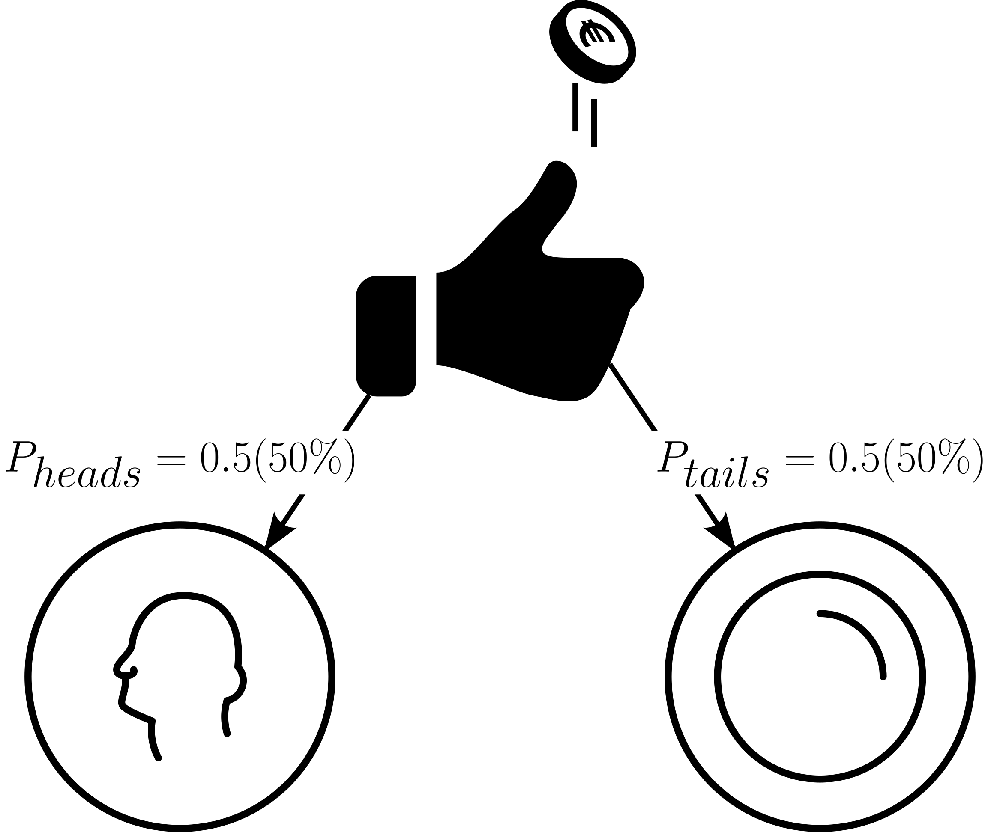

Inferential Statistics
The drive shaft exercise - Confidence Intervals

Figure 2: The 95% CI for the drive shaft data.
p-value

Figure 6: Type I and Type II error in the context of inferential statistics.
Statistical errors

Figure 7: The statistical Errors (Type I and Type II).
Paired and Independent Tests

Figure 8: The difference between paired and independent Tests.
The drive shaft exercise

Figure 13: The QQ plots for each drive shaft group shown in subplots.
Expanding to non-normal disitributions


Test 1 Variable

Figure 16: Statistical tests for one variable.
One-sample t-test
| group | mean_diameter | sd_diameter |
|---|---|---|
| group01 | 12.015 | 0.111 |
| group02 | 12.364 | 0.189 |
| group03 | 13.002 | 0.102 |
| group04 | 11.486 | 0.094 |
| group05 | 12.001 | 0.026 |

| group | statistic | p.value | method | alternative |
|---|---|---|---|---|
| group | estimate | statistic | p.value | parameter | conf.low | conf.high | method | alternative |
|---|---|---|---|---|---|---|---|---|
Test 2 Variable (Qualitative or Quantitative)

Figure 19: Statistical tests for two variables.
Pearson Corrrelation
The pearson correlation coefficient is a normalized version of the covariance.
Covariance is a measure of joint variability.
Covariance is a generalized formulation of the variance.
You and your friend are swinging back and forth.
When you swing forward, your friend also swings forward.
When you swing backward, your friend also swings backward.
Youre moving together thats like positive covariance.
When you swing forward, this friend swings backward.
When you swing backward, they swing forward.
Now youre moving in opposite directions thats like negative covariance.
Sometimes you go forward, and they go backward.
Other times, they go forward, and you go backward.
No pattern at all.
That means no covariance youre not moving together in any consistent way.
Covariance is a number that tells us:
How two things change together.
If they both go up or down at the same time (positive covariance).
If one goes up while the other goes down (negative covariance).
Or if they dont match at all (covariance near zero).
\[\begin{align} \mathrm{Cov}(X,Y) = \frac{1}{n}\sum{(X_i - \bar{X})(Y_i - \bar{Y})} \end{align}\]
| Temperature in C | Rod Length in mm |
|---|---|
| 20 | 100.2 |
| 22 | 100.5 |
| 24 | 100.9 |
| 26 | 101.3 |
| 28 | 101.6 |
computing means
\[\begin{align} \bar{X} = \frac{20+22+24+26+28}{5} = 24 \end{align}\]
\[\begin{align} \bar{X} = \frac{100.2+100.5+100.9+101.3+101.6}{5} = 100.9 \end{align}\]
| Temperature in C | Rod Length in mm | $X_i - \bar{X}$ | $Y_i - \bar{Y}$ | $(X_i - \bar{X}) \cdot (Y_i - \bar{Y})$ |
|---|---|---|---|---|
| 20 | 100.2 | -4 | -0.7 | 2.8 |
| 22 | 100.5 | -2 | -0.4 | 0.8 |
| 24 | 100.9 | 0 | 0.0 | 0.0 |
| 26 | 101.3 | 2 | 0.4 | 0.8 |
| 28 | 101.6 | 4 | 0.7 | 2.8 |
Sum the products
\[\begin{align} \sum(X_i - \bar{X})(Y_i - \bar{Y}) = 2.8 + 0.8 + 0 + 0.8 + 2.8 = 7.2 \end{align}\]
Compute Covariance
\[\begin{align} \mathrm{Cov}(X,Y) = \frac{7.2}{5} = 1.44 \end{align}\]
Interpretation:
- Covariance \(= 1.44\;C\cdot mm\)
- Its positive, meaning:
- When the machine runs hotter, the rods are longer (thermal expansion)
- Its not standardized
- The number \(1.44\) is not large or small until compared with variance or a correlation is computed
- \((X_i-\bar{X}) \rightarrow\) How different is this temperature from average?
- \((Y_i-\bar{Y}) \rightarrow\) How different is this rod length from average?
- Multiply them:
- Positive \(x\) Positive \(\rightarrow\) rods are longer at higher temp \(\rightarrow\) \(+\) contribution
- Negative \(x\) Negative \(\rightarrow\) rods are shorter at lower temp \(\rightarrow\) \(+\) contribution
- Different signs \(\rightarrow\) one high, one low \(\rightarrow\) \(-\) contribution
\[\begin{align} R = \frac{\mathrm{Cov}(X,Y)}{\sigma_x \sigma_y} \end{align}\]
- Covariance is sensitive to scale (\(mm\) vs. \(cm\))
- Pearson correlation removes units, allowing for meaningful comparisons across datasets


Pearson's product-moment correlation
data: drive_shaft_rpm_dia$rpm and drive_shaft_rpm_dia$diameter
t = 67.895, df = 498, p-value < 2.2e-16
alternative hypothesis: true correlation is not equal to 0
95 percent confidence interval:
0.9406732 0.9578924
sample estimates:
cor
0.95 Spearman Correlation
The spearman correlation coefficient (\(\rho\)) is based on the pearson correlation, but applied to ranked data
A rank is a position number assigned to an item in a sorted list. It tells you where the item stands relative to others.
| Name | Height in cm | rank |
|---|---|---|
| Alice | 160 | 1 |
| Bob | 165 | 2 |
| Clara | 170 | 3 |
| David | 175 | 4 |
| Elena | 180 | 5 |
| Observation | Temperature in C | Rod Length in mm | Comment |
|---|---|---|---|
| 1 | 20 | 100.2 | normal |
| 2 | 22 | 100.4 | normal |
| 3 | 24 | 100.7 | normal |
| 4 | 26 | 101.0 | normal |
| 5 | 28 | 101.3 | normal |
| 6 | 30 | 110.0 | steep increase |
| 7 | 32 | 120.0 | very steep |
| 8 | 34 | 130.0 | extreme |
| Obersvation | Temperature in C | Rod Length in mm | Comment | Rank $X$ | Rank $Y$ | $d = R_X-R_Y$ | $d^2$ |
|---|---|---|---|---|---|---|---|
| 1 | 20 | 100.2 | normal | 1 | 1 | 0 | 0 |
| 2 | 22 | 100.4 | normal | 2 | 2 | 0 | 0 |
| 3 | 24 | 100.7 | normal | 3 | 3 | 0 | 0 |
| 4 | 26 | 101.0 | normal | 4 | 4 | 0 | 0 |
| 5 | 28 | 101.3 | normal | 5 | 5 | 0 | 0 |
| 6 | 30 | 110.0 | steep increase | 6 | 6 | 0 | 0 |
| 7 | 32 | 120.0 | very steep | 7 | 7 | 0 | 0 |
| 8 | 34 | 130.0 | extreme | 8 | 8 | 0 | 0 |
\[\begin{align} \rho = 1- \frac{6\sum{d^2}}{n(n^2-1)} = 1 - \frac{0}{8(64-1)} = 1 \end{align}\]
Pearson correlation:
\(R = 0.86\)
The spearman \(\rho\) calculates the pearson correlation, but between the rank difference of the variables.
| Part | Meaning |
|---|---|
| \(\sum d_i^2\) | Total squared difference in ranks (rank disagreement) |
| \(6\) | Derived from algebraic simplification of Pearsons r using rank variance |
| \(n(n^2 - 1)\) | Comes from variance of ranks and number of comparisons |
| \(1 - \text{fraction}\) | Ensures perfect agreement yields \(\rho = 1\); increasing \(d_i^2\) lowers \(\rho\) |

Test 2 Variables (2 Groups)

Figure 27: Statistical tests for two variable.
Mann-Whitney U test
- Null Hypothesis: The medians of the two samples are equal.
- Prerequisites:
- Independence
- no specific distribution (non-parametric)
- Number of groups \(=2\)

This time a graphical method to check for normality is employed (QQ-plot, see Section 9.1). From the Figure 32 it is pretty clear, that the data is not normally distributed. Furthermore, the variances seem to be unequal as well.

Then, the formal test is carried out. With \(p<\alpha = 0.05\) \(H_0\) is rejected, the true location shift is not equal to \(0\).
Wilcoxon rank sum test with continuity correction
data: diameter by group
W = 7396, p-value = 4.642e-09
alternative hypothesis: true location shift is not equal to 0Test 2 Variables (> 2 Groups)

Figure 34: Statistical tests for one variable.
Analysis of Variance (ANOVA) - Basic Idea

Figure 35: The basic idea of an ANOVA.
Sum of squared error (SSE)

Figure 36: A graphical depiction of the SSE.
One-way ANOVA
- Null Hypothesis: True mean difference is equal to 0.
- Prerequisites:
- equal variances
- Number of groups \(>2\)
- One response, one predictor variable

The most important prerequisite for a One-way ANOVA are equal variances. Because there are more than two groups, the Bartlett test (as introduced in Section 12.1.2) is chosen (data is normally distributed).
Bartlett test of homogeneity of variances
data: diameter by group
Bartlett's K-squared = 275.61, df = 4, p-value < 2.2e-16Because \(p<\alpha = 0.05\) the variances are different.

Bartlett test of homogeneity of variances
data: diameter by group
Bartlett's K-squared = 2.7239, df = 2, p-value = 0.2562With \(p>\alpha=0.05\) \(H_0\) is accepted, the variances of group01, group02 and group03 are equal.
Of course, many software package provide an automated way of performing a One-way ANOVA, but the first will be explained in detail. The general model for a One-way ANOVA is shown in \(\eqref{onewayanova}\).
\[\begin{align} Y \sim X + \epsilon \label{onewayanova} \end{align}\]
- \(H_0\): All population means are equal.
- \(H_a\): Not all population means are equal.
For a One-way ANOVA the predictor variable \(X\) is the mean (\(\bar{x}\)) of all datapoints \(x_i\).


| sse | df | n | p | mse |
|---|---|---|---|---|
Then, the SSE and the MSE is calculated for the reduced model (\(H_0\) is true). In the reduced model, the mean is not calculated per group, the overall mean is calculated (results in Table 22).
| sse | df | n | p | mse |
|---|---|---|---|---|
The \(SSE\), \(df\) and \(MSE\) explained by the complete model are calculated:
\[\begin{align} SSE_{explained} &= SSE_{reduced}-SSE_{complete} = 118.36 \\ df_{explained} &= df_{reduced} - df_{complete} = 2 \\ MSE_{explained} &= \frac{SSE_{explained}}{df_{explained}} = 59.18 \end{align}\]
The ratio of the variance (MSE) as explained by the complete model to the reduced model is then calculated. The probability of this statistic is afterwards calculated (if \(H_0\) is true).
[1] 2.762026e-236The probability of a F-statistic with \(pf = 5579.207\) is \(0\).
A crosscheck with a automated solution (aov-function) yields the results shown in Table 23.
| term | df | sumsq | meansq | statistic | p.value |
|---|---|---|---|---|---|
Some sanity checks are of course required to ensure the validity of the results. First, the variance of the residuals must be equal along the groups (see Figure 41).

Also, the residuals from the model must be normally distributed (see Figure 42).

The model seems to be valid (equal variances of residuals, normal distributed residuals).
With \(p<\alpha = 0.05\) \(H_0\) can be rejected, the means come from different populations.
Kruskal Wallis

- Method A: baseline material
- Method B: different geometry
- Method C: different material


Kruskal-Wallis rank sum test
data: strength by group
Kruskal-Wallis chi-squared = 107.65, df = 2, p-value < 2.2e-16
Pairwise comparisons using Wilcoxon rank sum test with continuity correction
data: kw_shaft_data$strength and kw_shaft_data$group
Method_A Method_B
Method_B < 2e-16 -
Method_C 6.8e-14 2.0e-10
P value adjustment method: bonferroni Because \(p<\alpha = 0.05\) it can be concluded, that all means are different from each other.